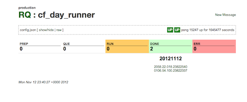

RQ is a simple queueing/messaging system for any Unix system and can process messages in any language. It is designed to run on every machine in your distributed system. Think of it as another one of those small, but important services (like crond). It uses directories and json text files on the Unix filesystem as its database. It does not use a specialized database. As a result, it is easy to understand and debug.
Each item in the queue is a Message. Messages can be small, but RQ was designed for a medium to large granularity. For example, messages could have attachments with 100s to 1000s of megabytes. Each message can be processed by the local machine or relayed reliably to another machine for processing. These machines don’t have to be in the same data center and in fact can be on another continent. When a message is received in a queue, a worker process is started to process the message. The worker process is one-to-one with a unix process. (some call this a ‘forking’ model). The code required to implement a worker is very small. Also, API is compatible with any language that runs on Unix. While a worker is processing a message, you can view a real-time display of logs (with ANSI colors) via the browser.
It has been used in production since 2009 and processed billions of messages at brightroll. It has a full test suite that verifies the system.
In the future, there is a goal of building a version that uses a single consistent store (something like MongoDB).
Here is a sample screenshot of a single queue:

Once RQ is installed, the user creates a queue. The queue requires only a few parameters, but the most important one is the ‘queue script’. This is a program written in any language that will process each message. The API for the queue script is easy to implement and described below. Whenever a message is received on that queue, this program runs. The program will either succeed, fail, or ask to retry x seconds in the future. If the script takes a long time to run, it can send periodic updates to RQ to indicate progress. The script can also provide a lot of logging and produces large files as output.
The RQ system provides a REST, HTML, cmd-line, or low-level socket API to work with messages and queues. That is all there is to it.
When would you use RQ? In a typical web application, you should always respond to the browser within a small time frame (say under 1 seconds). You should also avoid using a lot of memory in this section of your application stack as well. If you know a particular computation will exceed those requirements, you should hand off the task to a queueing system.
If you have scripts that run via cron, you should probably run that under RQ. In this scenario, RQ will monitor that the script properly executed.
Here are some examples:
The people behind RQ have been working on Unix since the late 1980’s. The focus of RQ has been on reliability and the ease of understanding. The author prefers systems that allow him to sleep soundly at night, and he thinks the design of RQ allows him to achieve this. There is a lot to talk about here and why the existing systems didn’t solve the problem. If you are interested in that, read the full philosphy section below.
Also, if you were on the internet in the 80s or 90s, you will see that this system bears some resemblance to the UUCP system deployed back then. It was definitely an inspiration for the design of this system.
You will need:
Clone the github repo. Untar the system in a directory of your choosing.
Run ./bin/web_server.rb --install
Now go to the web UI to follow the steps to complete an installation.
This should setup the RQ directory system and a few default queues.
Run the /etc/init.d/rq stop script
There should be no processes with rq running.
Run the /etc/init.d/rq start script
This should start several processes. There should be 1 rq-mgr process and one rq process per queue.
There should also be one web_server.rb process running.
(Also, I did
[rq-mgr])$ gem bundle (bundler ~< 1.x.x) or bundle install$ bin/webserver.rb installweb_server.rb process (after killing, just bin/web_server.rb)doneRQ Queue Config JSON
A typical config:
json
{"fsync":"no-fsync","ordering":"none","script":".\/code\/relay_script.rb","num_workers":"1","exec_prefix":"","name":"relay"}
Mandatory Fields
name: Name of the queue.
script: The path to the script that will process messages in that queue
num_workers: The number of processes that can run to handle incoming messages. This is equivalent to the max number of messages that can be in the run state. Default: 1
Optional Fields exec_prefix: This is what is prefixed to the script before the ‘exec’ system call is made to run the “script”. As a default, it is set to ‘bash -lc ’ if not set. Note the space on the end.
env_vars This is a map of key value pairs that will be established in the environment per script run.
It tries hard to
insure message is in identical state every run
avoid duplicate messages aka - there is a small chance that messages might be duplicated.
It does not try hard to guarantee ordering - messages might come in out-of-order. this may happen as a result of a failure in the system or operations repointing traffic to another rq
given the above, use timestamp versioning to insure an older message doesn’t over-write a newer message. if you see the same timestamp again for a previously successful txn, it might be that ultra-ultra rare duplicate, so drop it.
When developing an RQ script, you should have a problem in mind that requires just a few parameters.
Next you develop a script. You can skip down just a bit to see some examples.
Typically, you will setup RQ on your development enviornment. Then you will setup a queue for your particular
script. Then via the web UI, you will create a new message and submit it. In another tab, you can hit refresh
to the state of the message. If it succeeds, you are done. If not, just edit the code, hit refresh on the tab
that created the message (to resubmit the form and create a new test message), and check on the queue to see if it worked.
Essentially, this turns into a
``` ruby
end
def write_status(state, mesg = ‘’) io = IO.for_fd(ENV[‘RQ_PIPE’].to_i) msg = “#{state} #{mesg}\n” io.syswrite(msg) end
write_status(‘run’, “just started”) sleep 2.0
log(cwd)
log(ENV.inspect)
write_status(‘run’, “pre lsof”)
log(lsof -p $$)
write_status(‘run’, “post lsof”)
5.times do |count| log(“sleeping”) write_status(‘run’, “#{count} done - #{5 - count} to go”) sleep 1.0 end log(“done sleeping”)
log(“done”) write_status(‘done’) exit(0) ```
Here is a BASH script sample. Yes, even a bash script can handle RQ messages (which was surprising to me!) The main drawback with BASH as an RQ script is how it deals with functions. I would only use it for fairly simple scripts.
``` bash
function write_status { echo $1 $2 >&3 }
write_status ‘run’ “just started”
echo “TEST TEST TEST”
pwd
if [ “$RQ_PARAM1” == “html” ]; then echo “html unsafe chars test” echo “” echo “” fi
env | grep RQ_
echo “———– all env ———” env echo “—————————–”
lsof -p $$
write_status ‘run’ “post lsof”
if [ “$RQ_PARAM1” == “slow” ]; then echo “This script should execute slowly” write_status ‘run’ “start sleeping for 30” sleep 30 write_status ‘run’ “done sleeping for 30” fi
if [ “$RQ_PARAM1” == “slow1” ]; then echo “This script should execute slowly” write_status ‘run’ “start sleeping for 1” sleep 1 write_status ‘run’ “done sleeping for 1” fi
if [ “$RQ_PARAM1” == “slow3” ]; then echo “This script should execute slowly” write_status ‘run’ “start sleeping for 3” sleep 3 write_status ‘run’ “done sleeping for 3” fi
if [ “$RQ_PARAM2” == “err” ]; then echo “This script should end up with err status” write_status ‘err’ “by design” exit 0 fi
if [ “$RQ_PARAM1” == “dup_direct” ]; then # Todo: need something better than a free roaming rm rm -f “$RQ_PARAM2” echo “This script should create a duplicate to the test_nop queue” write_status ‘run’ “start dup” write_status ‘dup’ “0-X-test_nop” read_status echo “Got: [${RETURN_VAR[@]}]”
if [ “${RETURN_VAR[0]}” != “ok” ]; then echo “Sorry, system didn’t dup test message properly : ${RETURN_VAR}” echo “But we exit with an ‘ok’ the result file won’t get generated” fi
if [ “${RETURN_VAR[0]}” == “ok” ]; then # Old school IPC echo “${RETURN_VAR[1]}” > “$RQ_PARAM2” fi write_status ‘run’ “done dup” fi
if [ “$RQ_PARAM1” == “dup_fail” ]; then # Todo: need something better than a free roaming rm rm -f “$RQ_PARAM2” echo “This script should create a duplicate to a non-existent queue” write_status ‘run’ “start dup” write_status ‘dup’ “0-X-nope_this_q_does_not_exist” read_status echo “Got: [${RETURN_VAR[@]}]” # Old school IPC echo “${RETURN_VAR[@]}” > “$RQ_PARAM2” write_status ‘run’ “done dup” fi
if [ “$RQ_PARAM1” == “resend1” ]; then if [ “$RQ_COUNT” == “0” ]; then echo “This script should resend the current job at a new time” write_status ‘resend’ “2” exit 0 fi fi
if [ “$RQ_PARAM1” == “resend2” ]; then if [ “$RQ_COUNT” -lt 6 ]; then echo “This script should resend the current job at a new time” echo “count: ${RQ_COUNT}” write_status ‘resend’ “0” exit 0 fi fi
if [ “$RQ_PARAM2” == “resend1” ]; then if [ “$RQ_COUNT” == “0” ]; then echo “This script should resend the current job at a new time” write_status ‘resend’ “8” exit 0 fi fi
if [ “$RQ_PARAM1” == “symlink” ]; then echo “This script should end up with a done status” echo $0 write_status ‘done’ “${0}” exit 0 fi
echo “done” write_status ‘done’ “done sleeping” ```
Errors do happen in production in ways we cannot anticipate.
For example, you may Here is a BASH script sample. Yes, even a bash script can handle RQ messages (which was surprising to me!) The main drawback with BASH as an RQ script is how it deals with functions. I would only use it for fairly simple scripts.
When a queue has a message to process, and a slot is available to run, the queue script will be executed in a particular environment. This environment passes information about the message to the script via two ancient forms of Interprocess Communication: Environment variables and the filesystem.
Current Dir =
Full Msg ID = host + q_name + msg_id
ENV[“RQ_SCRIPT”] = The script as is defined in config file ENV[“RQ_REALSCRIPT”] = The fully realized path (symbolic links followed, etc) Should be equivalent to ARGV[0]
ENV[“RQ_HOST”] = Base URL of host (Ex. “http://localhost:3333/”) ENV[“RQ_HOSTNAMES”] = Base URLs of host (aliases) (Ex. “http://localhost:3333/ http://butter:1234/”) Split by space
ENV[“RQ_DEST”] = Msg Dest Queue (Ex. http://localhost:3333/q/test/)
ENV[“RQ_DEST_QUEUE”] = Just Queue Name (Ex. ‘test’)
ENV[“RQ_MSG_ID”] = Short msg id (Ex. “20091109.0558.57.780”)
ENV[“RQ_FULL_MSG_ID”] = Full msg id of message being processed (Ex. http://vidxcode27.vbtrll.com:3333/q/test/20091109.0558.57.780)
ENV[“RQ_MSG_DIR”] = Dir for msg (Should be Current Dir unless dir is changed by script)
ENV[“RQ_PIPE”] = Pipe FD to Queue management process
ENV[“RQ_COUNT”] = Number of times message has been relayed or processed
ENV[“RQ_PARAM1”] = param1 for message ENV[“RQ_PARAM2”] = param2 for message ENV[“RQ_PARAM3”] = param3 for message ENV[“RQ_PARAM4”] = param4 for message
ENV[“RQ_FORCE_REMOTE”] = Force remote flag
ENV[“RQ_PORT”] = port number for RQ web server, default = 3333
ENV[“RQ_ENV”] = ‘production’, ‘development’, ‘test’, ‘stage’ ENV[“RQ_VER”] = version of rq
RQ traditionally runs on port 3333.
cleaner - this queue removes old messages
relay - this queue sends messages to a separate system
Whenever RQ is given a message that is destined for a separate host, the message actually
goes into this queue.
rq_router - this queue handles the ‘RQ Router’ mode described in the
For The Ops People below.
webhook - this queue does webhook notifications for any message that requests it
Typically, what we have done to run Rails code is to just have the queue script
setup the environment and run the ./script/runner facility that rails provides..
RQ can do a few things that aren’t obvious above.
One important topic to cover is the ‘RQ Router’ mode. In this mode, you basically have a system or pair of systems set up to process.
A question that comes up occassionaly is, how do I test an RQ script?
Right now, the best answer is to create a test environment with the RQ server and queue set up.
Then inject messages into the queue and verify that the messages are consumed and processed correctly.
Currently RQ is written in Ruby. Ruby definitely has its problems, but overall was an excellent choice. For more on that decision, see the History below.
RQ depends heavily on the Unix API.
We use Unix Domain Sockets for the primary RPC mechanism. They work just like TCP sockets, except we don’t have to worry about network security. You rendezvous with the listening process via a special file on the filessystem. They are better than pipes since they provide 2 way communication.
There are 3 primary systems that make up RQ. The rq-mgr process, the individual rq queue processes, and the web server process.
The primary process is the rq-mgr process. It sets up a Unix Domain socket and communicates via that for its primary API. Its primary function is to watch over and restart the individual rq queue processes. It maintains a standard Unix pipe to the child rq process to detect child death.
Each queue gets its own process. They also communicate . These monitor their queue directories and worker processes. They have the state of the ‘que’ queue in memory. It also uses a standard unix pipe to communicate with the rq-mgr. For queue scripts it maintains.
The web server exists to give RQ a human (HTML) and non-human (REST) interface using the HTTP standard. This makes it easy to use via a browser, cURL, or with just about any HTTP lib that comes with any language.
The system
When working in distributed systems, you will eventually learn that some part of the system will be down or unavailable for many unknown reasons. For example,
Also, when working in a large system, you end up having many parts that are important, but not the critical path. There are also many layers, and developers cannot anticipate all of the different errors that can occur. Given the lack of priority, sometimes you just need a system that is easy to diagnose and fix.
Unfortunately, most systems are designed so that the framework to deal with the above is left to the engineers. For example, everybody agrees that errors are bad and will occur. Yet there are many systems that will silently ignore errors.
There is also a general lack of understanding of Unix best practices. For example, when DHH proclaimed to ‘cheat’ by running ImageMagick in a separate process, this was a huge revelation to the community. Overall, people
RQ is designed to mitigate a large portion of this.
It is process based. This eliminates the single message taking down the whole system problem
During my career, it was common to see people rediscover the need for queueing systems over and over again. Typically, there is a spectrum for queueing systems. On one end there is the high-speed, message bus type system that runs a stock exchange. On the other end of the spectrum, you could consider email.
Typically, properly implemented queueing systems required serious infrastructure. In fact, because of performance issues, most of these do not persist to disk. The high-end ones have complex APIs and usually are designed for small message sizes.
Then there are the home grown systems which are usually implemented on Redis or memcache
Then there are the basic ones that run off of a SQL database.
All of these require external systems to handle the state.
I decided to make several bets:
However, only a few of these panned out.
At the time, it was the goto language of choice at BrightRoll. Other languages were considered that were significantly different than Ruby, but didn’t seem appropriate.
My goals were:
Of all of those, only the first occurred.
Again, Ruby was a good choice. It was pretty easy to get certain features implemented and into production. The three biggest drawbacks to ruby were
Overall speed of the language
When it was initially developed on Mac OS X, it was immediately discovered that the directories would have to be named (.noindex) as the activity of RQ caused a tremendous load on Spotlight. Now I do my development of RQ via ssh to a VirtualBOX Ubuntu instance.
Yet, even with these drawbacks, the overall architecture proved to work pretty well. The forking model hides most of the issues that someone would run into with.
Address weaknesses
Rewrite the components of the system in C
This document was produced via Emacs in Viper Mode.
This project uses Semantic Versioning.
Dru Nelson http://github.com/drudru @drudru
The overall concepts are very similar to the original UUCP systems that use to span the internet.
The idea for the directory storage was copied from the Qmail architecture by Dan J. Bernstein.
The code for RQ was largely written in-house.
Thanks to the BrightRoll engineers who used the system to help work the bugs out.
http://github.com/TJeezy is largely responsible for making RQ look a lot better.
I looked to resque for inspiration for this documentation. I treat it as a goal that I still want to achieve.
Queue Script Processing
Each queue script runs as a child of an rq process for that queue. The queue script process communicates with that process via a simple pipe. The stdio fds (stdout and stderr) are redirected to a file.
By sending the following:
CMD SPACE TEXT NL
Where:
CMD = run | done | err | relayed | resend | dup
For obvious reasons, the TEXT cannot have any newline characters. The ‘TEXT’ should be small in size. There is no limit, but realistically, anything over 200 characters is probably unneccessary.
CMD Codes
run - When the script is running, it is in ‘run’. To send an updated status to the operator about the operation of the script, just send a ‘run’ with TEXT as the status.
example: run Processed 5 of 15 log files.
done - When the script is finished, and has successfully performed its processing. It sends this response. It must also exit with a 0 status or it will go to ‘err’.
example: done done
err - When the script has failed, and we want to message to go to ‘err’ (probably to notify someone that something has gone wrong and needs operator attention). Any exit status at this point will take the message to ‘err’.
example: err Mysql dump script failed.
resend - When the script has failed, but we want to just retry running it again, we respond with a ‘resend’. This will cause a message to go back into ‘que’ with a due time of X seconds into the future.
resend TEXT = DUE DASH REASON
DUE = num seconds to wait from now
REASON = free text
example: resend 300-Memcached reflow-west.btrlll.com not responding.
relayed - This is used by the relay queue and should not be used by a user queue script.
dup - Create a clone of the existing message (including attachments) to the new destination. NOTE: This is the first status response that is a 2 way conversation with the queue process. If the queue does match /^https?:/, then it goes to ‘relay’ to be sent on. Otherwise it is considered a local. If relay or the local queue doesn’t exist or is admin DOWN/PAUSE, then the the response will indicate failure. This resets the current count for the newly generated message.
dup TEXT = DUE DASH FUTUREFLAG DASH NEWDEST
DUE = num seconds to wait from now (USE 0 for NOW) to run
FUTUREFLAG = ‘X’ for now now
NEWDEST = proper RQ destination queue
example: dup 0-X-http://blocking08.vbtrll.com/q/barrier_wait
response:
STATUS SPACE CONTENT
STATUS = ok | fail
CONTENT = for ok:
RQ
RQ is a simple queuing system based on message passing.
Every
Architecture
The system exists in one directory. The commands to operate on a queue are bound to the queues in the directory the commands exist in.
The system is composed of a web server and a supervisor process. The webserver is Sinatra running on Rack running on Webrick. This may change. All processes are single threaded. The web server communicates with the supervisor process on a unix domain socket.
There will only be one supervisor process. The supervisor process starts up queue supervisor (quesup) processes for all the queues. Any children of any process will have a pipe to their parent. If that pipe goes away, a child should shut down immediately.
There should only be one quesup for a given queue. A file-lock will be used for safety. Since there is only one, no locks are required in the filesystem to manage the queue for injection.
It handles all communication and
REST API Influences http://wiki.developer.myspace.com/index.php?title=RESTful_API Couch DB http://wiki.apache.org/couchdb/HTTP_Document_API
BIN Dir
We have a binary directory for future CLI compatability.
Special queue: relay
The queue states
prep que run - starting - running - finishing done - relay err
Two-Phase Commit for Protocol
… avoids duplicate sends or
Sender Receiver
if no id, —–> alloc_id id <—–
else use stored id —–> prep, id ok | <—– -> continue fail/unknown | <—– -> fail job ok/already commited | <—– -> mark job done
continue: modify or make attachments <—–> attach/etc
ok, commit —–> commit ok | <—– -> mark job done
+Sleep random for inject +Change ‘queue’ to ‘q’ in message id and url +Change ‘messages’ status to show all q’s +Have q inject go to actual q + change form + change controller + Reverse presentation of messages in a queue
milestone 1
Have a local queue script deliver message to a local queue + scheduler wakes up on injection + Create a simple script that writes its ENV to a log (verify file descriptors,etc) + run a script in an environment for message + Have a script to run. if script fails. queue is stopped. + Child script is monitored by this process + notice pipe, exit + queue states +run - started / process message +run - running / (time remaining x secs -or- Ykb of Zkb remaining -or- X bytes of Z bytes processed) -done - Proper status exit with 0 process return (diff fileque) -fail - Any process exit without commit (diff fileque) -relay - Another proper status exit - new ID -reschedule - Another proper status exit - same ID, new due date - properly move job to done when done x queue reads run states from disk on restart x lite restart queue, re-run scheduler + script runs and has an environment + script runs and has an environment and a log - should that be via IPC? (cheap) x or via a program? (expensive) x both + a format that is bash friendly + KINDA - a buffer for pipe reads? (must do properly) + test with Bash + handle proper completion done/fail/relay/resend + done - just move into that dir + fail - move into that dir + relay - indicate that the job was relayed to a url + resend - delay time - requeue, and log some messages
Tuesday + a simple test curl script to create a queue and messages to it + runs tests, detects if tests pass + sets up two queues (relay and test) + See why messages are going into relay + test script responds to param1 + script checks job status + sends messages + 1 for done + 1 for fail/err + 1 for done with non-zero exit (err) + 1 for resend, detect that it was resent + Increment RQ_COUNT for every resend + a real relay script in ruby that looks at dest of message, notices that routing + if it is this host + if it isn’t this host, fail at this time + script to test relay + 1 for relay, get relay redirect location and done on final queue + Store ID + Use ID + test router script + local queue on same host + Queue status message should be updated for fail, pause, done, err
Test file upload
milestone 2 *
milestone 3 - Have a master test script to run the series of test scripts - Have a versioning system - DONE
Implement CDB push system - Delivers to local - Relayed to cdb_push script - cdb_push creates new cdb file - cdb_push preps new messages to other machines - cdb_push waits for all messages to complete or errors out - remote machines script moves file into proper location as proper user
milestone 3 - parallel job running - test delete message
Later… - Test two phase properly - Code to return md5s of attachments - Code to return md5s and mime/types of attachments - Store due dates for jobs in que - web queue status for done is propper - Lower priority of all children - Put children in process groups - Properly detect signals that suspend processes - Insure that all children get killed (hmm a vote for C) Do Linker tricks later - Make a partial for queue status - Master qmgr cleans up all processes if queue doesn’t do so properly - Bloom filter for Done - might be in X, if not - then definitely not - might be just lru / array of Y most recent - System for handling a down machine - Tiny window where client doesn’t get updated location - Admins push jobs somewhere else, generally one machine - Admins have host that responds to that queue and sends redir response to client - Proper way to migrate people from a machine - Take machine out of pool of machines - Watch traffic die down, all jobs flush (once jobs completed, generally safe to take down) - Take machine offline
Control queue states (clean shutdown, hold, go) Refactor Quemgr to be like queue
Have a script for another queue (cdb push)
Have a local queue script move job to a remote queue
DONE
Restart Server Command via web View log via web (last 10 entries)
Have the queue send job to destination queue (local machine, local filesystem) Have remote queue deliver Have remote queue run
Good links on Unix Process stuff:
Daemons in unix http://www.enderunix.org/docs/eng/daemon.php
Good Link on Straight Up, Old Skool Pipes http://www.cim.mcgill.ca/~franco/OpSys-304-427/lecture-notes/node28.html
Process control http://www.steve.org.uk/Reference/Unix/faq_2.html
http://en.wikipedia.org/wiki/Process_group
VERSION